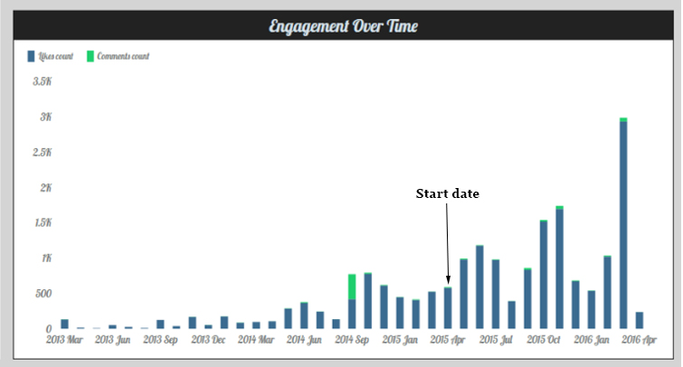

Helsby High School Facebook Improvements

Improvements made to Facebook from when I started on dotted line

Difference between when I started and previous year

Other metrics of improvements
Helsby High School Twitter Improvements

Improvements to Twitter one month after starting

Original analytics for twitter page
School of the Arts Internship

Demonstrating increase in engangement since starting social media team